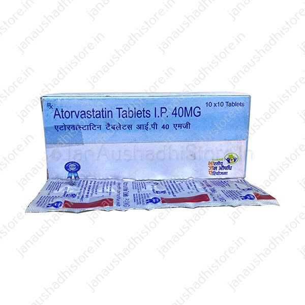

Atorvastatin
Price: ₹10
Description:
Atorvastatin is used together with diet, weight loss, and exercise to reduce the risk of heart attack and stroke and to decrease the chance that heart surgery will be needed in people who have heart disease or who are at risk of developing heart disease. Atorvastatin is also used to decrease the amount of fatty substances such as low-density lipoprotein (LDL) cholesterol ('bad cholesterol') and triglycerides in the blood and to increase the amount of high-density lipoprotein (HDL) cholesterol ('good cholesterol') in the blood. Atorvastatin may also be used to decrease the amount of cholesterol and other fatty substances in the blood in children and teenagers 10 to 17 years of age who have familial heterozygous hypercholesterolemia (an inherited condition in which cholesterol cannot be removed from the body normally).